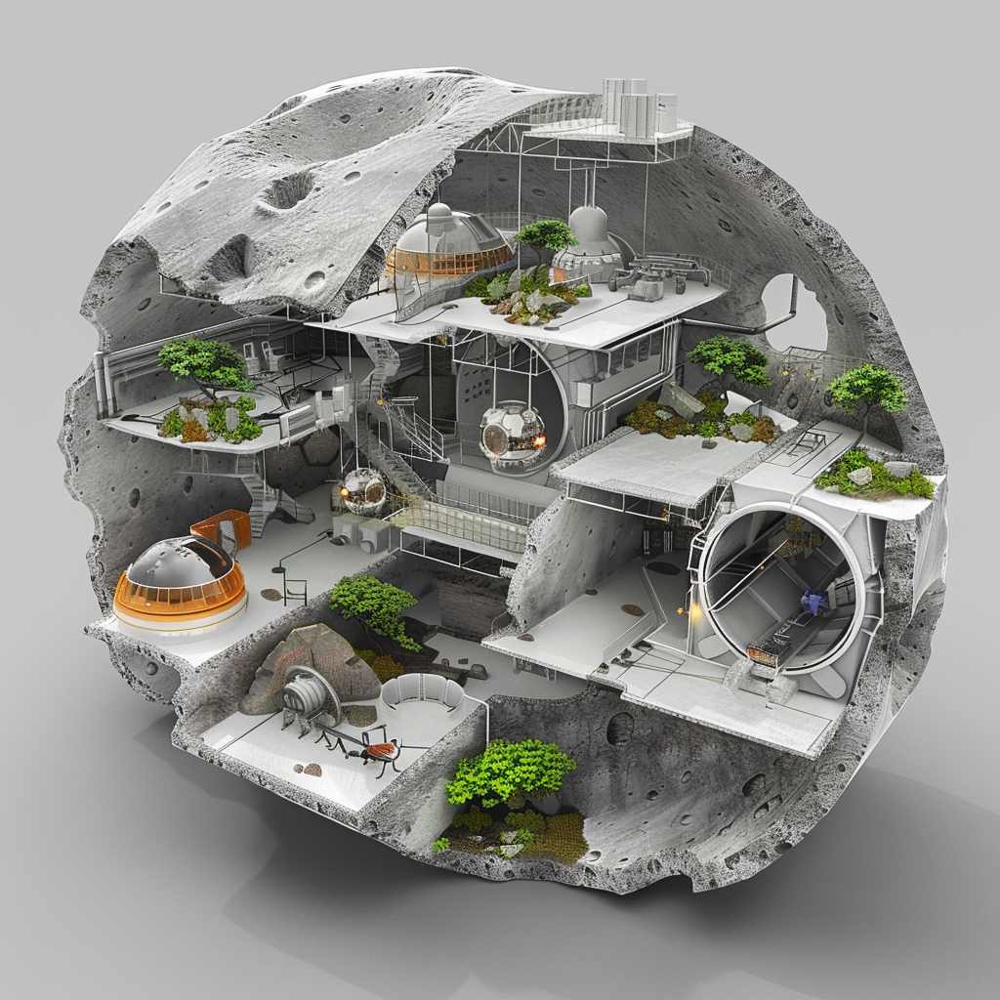

Governance and Management
Governance and Management

Governance Structure
- Clear roles and responsibilities: For managing the habitat to ensure efficient management and operation, streamlining decision-making processes.
Decision-making Processes
- Efficient processes for daily operations and emergency situations: Ensures that decisions are made quickly and effectively, minimizing disruptions and maintaining stability.